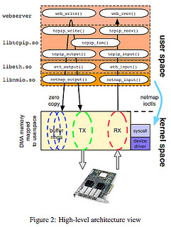

Networking Tricks with the Linux Kernel
http://johntellsall.com/networking-tricks
John Mitchell
☃
next talk: Tuesday, on Django + Docker
http://johntellsall.com/networking-tricks
John Mitchell
☃
next talk: Tuesday, on Django + Docker
apps talk to other apps
Note
There are tons of kernel structures to make this happen -- we'll cover about a dozen types tonight.
Many are unknown or have subtle details.
It looks like it works one way, but there are important differences.
and... DETAILS MATTER!

Note
details matter!
How apps talk to each other matters:
Note
instead of “one size fits all” use specific features that fit your app
=> theme: concept doesn’t match implementation

Note
Note
Everyone knows this stuff, but there’s a lot of details which can be subtle, or awesome.
There will be a cheat sheet later
good old pipes
named pipes are awesome
anything with a file address (ie: path), can be connected to anything that expects a file

mkfifo --mode=0666 /tmp/pipe
psql -c "COPY x.x FROM '/tmp/pipe'
gunzip < data.gz > /tmp/pipe
Note
/tmp/pipe is an address (file path)
JM diagram
- connection-oriented
- reliable stream of bytes
- bytes consumed by sink
- new: bidirectional
- new: on each end is an “address”: IP address, a (TCP) port
Note
Metaphor is a “pipe”: path with two endpoints -- connection oriented -- reliable ordered stream of bytes.
Usage: client connects to endpoint on server, transfer data back and forth
Example: used for web and tons of stuff.
more: "Hello, would you like to hear a TCP joke?"
Note
theme: details matter!
Note
A: no response, so you’ll never know!
theme: best tool for the job
which is better?
Note
connection oriented isn’t always the best: can’t interrupt data flow; CPU has to examine each and every byte to figure out where messages begin and end
JM diagram
98% reliable!
Q: for connectionless protocols (UDP), how does server know who to send response to?
Note
UDP: how do you know who sent you a packet?
A: kernel gives you user data, but there’s also other data available in the network headers
Note
server bind: s.bind((HOST, PORT)) server: data,addr = s.recvfrom(1024)
client send: s.sendto(msg, (host, port)) client: reply,addr = s.recvfrom(1024)
(JM: how?) IP header has client’s IP. (JM: what about UDP port?) (JM: example UDP “send to client”)
Note
later: http://www.thomasstover.com/uds.html Demystifying Unix Domain Sockets
fast, low-latency, reliable, and:
Note
This means that if you have two or more processes on the same machine, you have a wide range of options, including skipping distributed queues like Redis Detail: and sequential packets
develop in this order:
Note
use UDP packets: * fast * low latency * don’t have to parse messages * can’t get partial message * TCP stream you can’t interrupt * same machine: no dups, drops, or latency
Note
UNIX-domain sockets are generally more flexible than named pipes. Some of their advantages are: * You can use them for more than two processes communicating (eg. a server process with potentially multiple client processes connecting); * They are bidirectional; * They support passing kernel-verified UID / GID credentials between processes; * They support passing file descriptors between processes; * They support packet and sequenced packet modes.
http://stackoverflow.com/questions/9475442/unix-domain-socket-vs-named-pipes
faster?
Note
we’ve talked about fast unreliable UDP and connection-oriented TCP -- what’s faster: Unix domain socket or TCP?
A: for lots of connections:
"friend" TCP up to 3x faster than Unix domain
Note
TCP socket as stream of bytes: using sendmsg(), server can start workers, accept a socket, then reconnect socket to already running worker, then continue listening.
=> theme: details matter
“Unlike stream sockets (tcp or unix domain), datagram sockets need endpoints defined for both the server AND the client. When one establishes a connection in stream sockets, an endpoint for the client is implicitly created by the operating system. Whether this corresponds to an ephemeral TCP/UDP port, or a temporary inode for the unix domain, the endpoint for the client is created for you. Thats why you don't normally need to issue a call to bind() for stream sockets in the client.” http://stackoverflow.com/questions/3324619/unix-domain-socket-using-datagram-communication-between-one-server-process-and
future directions
10x performance ...
... at the cost of doing everything yourself!
Note
... at the cost of direct hardware ring buffer to communicate. 10x performance, at the cost of abandoning a lot of Linux services XX link

Docker Django stack in Five Minutes
Tuesday!
LA Django meetup